团队协作中的 Github flow 工作流程
作为一名开发人员 Git 常用命令每天都在使用，大家肯定信手捏来，但是在团队协作中 Git的使用姿势和个人开发还是有很多不一样的地方，对于技术团队，期望大家使用规范的 Git 操作流程，规范的 Commit Message，规范的代码风格。这样才能提高团队开发相率和项目的可维护性。今天主要为大家介绍一基于 Github flow 的一套 Git 操作流程。
fork
首先，多人协作的情况，我们通常会 fork团队项目主仓库到自己的托管空间下，然后 Clone 到本地进行开发,
假设团队项目的托管地址为：
https://github.com/elemeFe/github-flow
此时主仓库项目下的固定分支两个，分别是 master，develop。

Clone 到本地：
git clone git@github.com:fe/github-flow.git
假设上面主仓库 fork 之后的项目地址为：
https://github.com/xxx/github-flow
Fork 出来的仓库完全属于你自己，你可以任意修改该仓库的代码及配置，但是除非你向项目主仓库提交 pull request，并且被接受通过，你才可以将你fork 仓库修改的代码合并到主仓库，否则不会对主仓库产生任何影响。
此时可以在控制台输入 git remote -v 命令查看当前远端仓库的地址，输出如下：
origin git@github.com:xxx/github-flow.git (fetch)
origin git@github.com:xxx/github-flow.git (push)
可以看出该地址的远端（origin）为刚刚 fork 到自己的托管空间下项目地址。
接下来我们可以设置一个名字为 upstream 的上游地址，也就是我们项目主仓库的地址
在命令行执行：
git remote add upstream git@github.com:fe/github-flow.git`
添加一个别名为upstream(上游)的地址，指向之前 fork 的原项目仓库地址。
再次执行 git remote -v 控制台输出如下：
origin git@github.com:xxx/github-flow.git (fetch)
origin git@github.com:xxx/github-flow.git (push)
upstream git@github.com:fe/github-flow.git (fetch)
upstream git@github.com:fe/github-flow.git (push)
设置上游地址的目的是当我们通过 pull request 的形式提到主仓库之后，本地仓库需要同步主仓库的代码，并及时更新到 origin（远端）仓库，保证自己托管空间下本地和远端仓库的代码都是最新的。
之后运行下面几条命令，就可以保持本地仓库与上游（upstream）仓库同步了
git fetch upstream
git checkout master
git merge upstream/master
接下来就是本地仓库推送到远端（origin）仓库：
git push origin master
这个时候我们可以在本地进行开发了，通常我们规定：
开发新功能要从 develop 分支上新建一个 feat/[name-desc] 临时分支
bug 修复 从 master 分支新建一个 hotfix/[name-desc] 临时分支
对于Github flow 流程中，master 分支包含稳定的、发布到生产的代码，develop 分支包含迭代最新的Code review 通过并自动化测试通过的代码。
这里需要注意：不允许任何开发人员把未经测试或者没有 Code review通过的代码直接提交到 master、develop 分支上去。
对于多人开发，feat/[name-desc]、hotfix/[name-desc] 属于临时开发分支，开发完成且测试通过且Code review 通过之后需合并到 develop、master 分支。当需要代码部署到生产环境时，将 develop 分支的代码合并到 master，再将 master 的代码部署到生产环境。
新建feature 功能分支
当开放人员在进行项目功能迭代开发时，首先要基于develop 分支，新建一个分支出来：
git checkout -b feat/feedback develop
之后我们在 feat/feedback 分支进行 A 功能迭代，提交代码到本地仓库。
当我们功能开发完成之后，若是有其他人在同一个项目上进行 B 功能的开发，那么我们在 push 本地代码之前，检查 feat/feedback 分支是否部分落后于上游（upstream） develop 分支：
git checkout develop
git pull
git log feat/feedback..develop
如果没有输出任何提交信息的话，即表示 feat/feedback 分支 相对于 develop 分支 是 最新（up-to-date）的。如果有输出的话去执行 git merge --no-ff ，提交路线图就会分叉，为了得到一个干净清爽的提交路线图，合并前最好先执行：
git checkout feat/feedback
git rebase develop
这会将整个工作分支移到 develop 分支的前面（HEAD），可以使 feat/feedback 分支与上游（upstream） develop 分支同步，最后我们将代码推送到远端（origin）分支。
git push origin feat/feedback
这样 pull request 通过之后，feat/feedback 分支的代码执行合并操作之后，commit 历史拼接到更新到最新的develop 分支之后，最终得到一个干净舒服的提交线图。
提交 pull request
从自己远端（origin）仓库的 feat/feedback 分支想要提交到上游（upstream）主仓库的 develop 分支，需要去在主仓库上Open a pull request ：
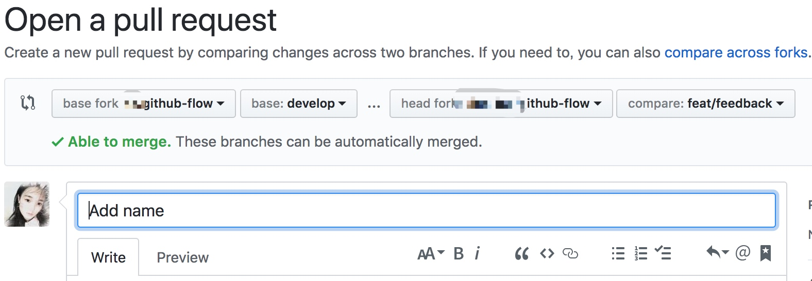
Code review 通过后我们可以有三种方式将代码合并到上游 github-flow 项目的 develop 分支：
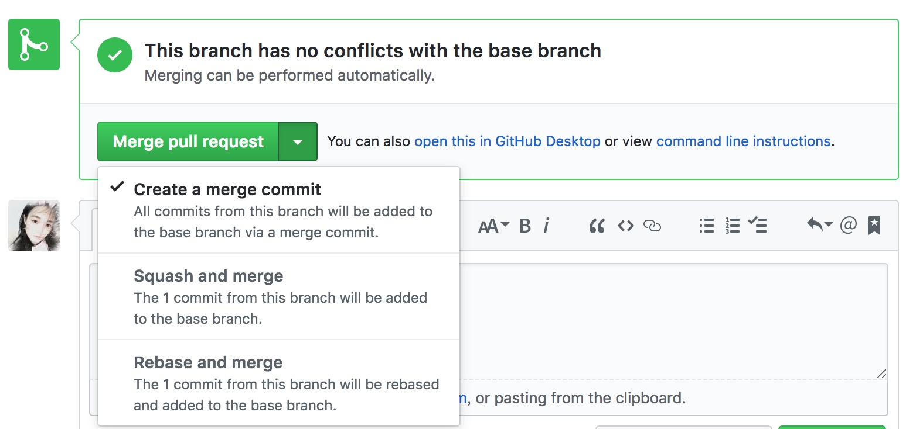
在点击Merge pull request 的时候，我们看到有三个选项，简单介绍一下使用场景：
Create a merge commit
当点击的是 Create a merge commit 时，feature 分支上所有的 commit 都会被加到develop 分支后面，并且会生成一个 merge commit 新节点。这个 pull request 的合并使用的就是 git merge --no-ff操作，使用该操作合并之后的commit 路线图如下：
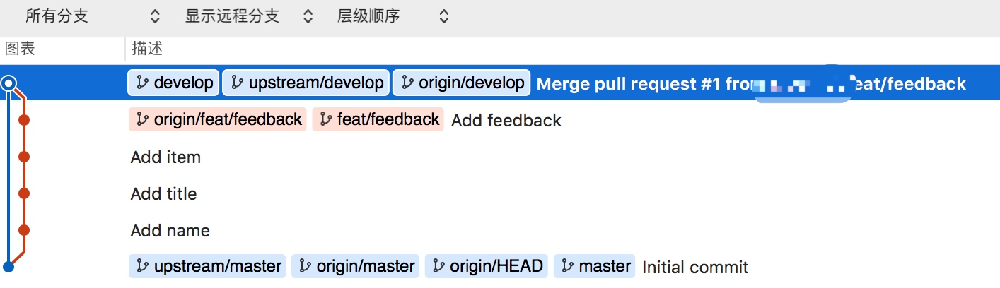
通过上图我们可以看到，使用 git merge --no-ff 其实是特意弄出提交线路分叉的效果。可能一些人会不喜欢这种分叉出来的效果，但是对于多人合作的项目中，你需要更清晰的告诉你的小伙伴：这一系列都是我为了同一目的而做的提交，并且我在这个节点结束了本地功能开发，合并到了 develop 分支，完成了本次迭代开发。这样子同伴们就可以很清晰的知道是哪个人做了哪些提交，回溯历史的时候也会更加方便。
Squash and merge
当选择 Squash and merge 选项时，实际的git 操作为 git merge --squash 。这个命令会使 该pull request 上的所有 commit 都会合并成一个 commit 放在 develop 分支上，原来的 commit 历史并不会带过来。
假设本次开发在 feat/login 分支上做了三次提交：
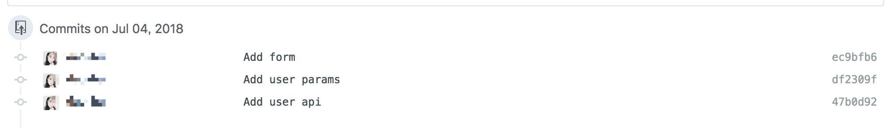
点击 之后，提交路线图如下：
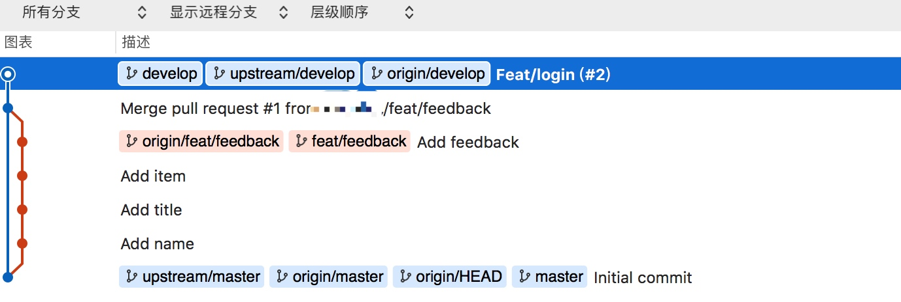
很清晰可以看到我们的三个 commit 在 develop 分支上看不到了，只留下了我们提交 pull request 时生成的commit。
判断是否要用Squash and merge 的标准是待合并的分支的历史是否有意义，如果在开发分支上提交的非常随意，并没有做一个很好的规范性提交，那么可以使用 Squash and merge 选项。但是对于大型项目的多人开发过程中，保证每个 commit 必须有意义是开发人员的基本素养及要求，因此不建议在团队开发中使用Squash and merge 选项。
Rebase and merge
当选择 rebase and merge 时，实际上做的操作是git rebase。使用 git rebase 会将 pull request 上的所有提交历史按照原有顺序依次拼接到 develop 分支的头部（HEAD），看起来像是在 develop 分支做了这些提交，但是每个 commit 的SHA1值会发生改变，因此合并到develop 分支的提交的SHA1 值会更新，下图为 feature 分支的 commit 历史：
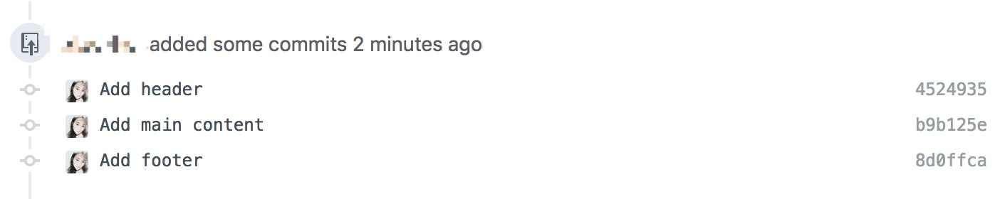
使用 rebase and merge 之后，develop 分支的 commit 路线图如下：
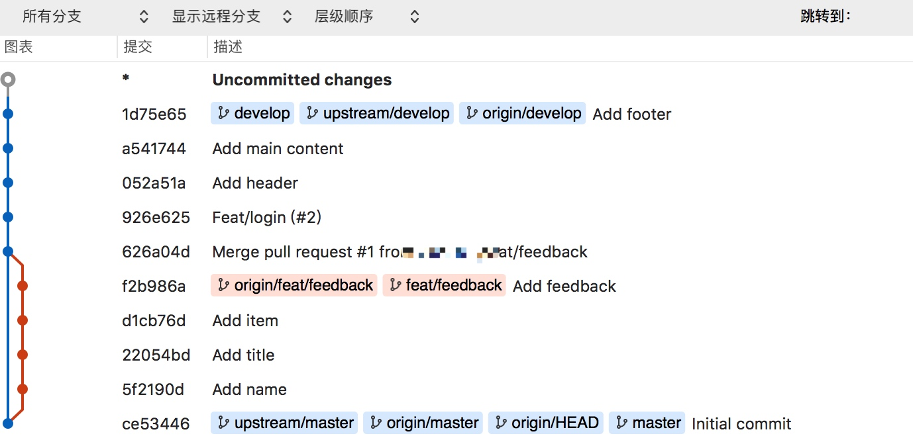
上面两图可以明显看出 commit 的SHA1 发生了变化，因此在使用 git rebase 的时候千万要注意：不要对除了你以外的公共仓库分支执行git rebase，git rebase 的实质放弃现有的提交而去新建内容一样的提交，实际上是不同的提交。
当然使用git rebase 会有一定风险，在不完全熟悉 Git 工作流时，不建议去做该操作。比如在结对编程的过程中你将你的提交推送到了你远端仓库的 feature 分支，并且你的伙伴从该分支拉去代码进行后续开发，如果此时你用 git rebase 命令重新提交并再次 pull，那么你的小伙伴要在他提交代码之前将你的提交进行整合，并且你还要拉取他提交的整合过的代码，整个过程就很混乱。
git rebase 都说是危险的，但是只在从未推送至共用仓库的提交上执行变基命令，就不会有事。因此我们采用fork 到自己仓库的方式去做 pull request 操作，并没有在主仓库进行操作，在这里，git rebase 是安全的。
最后总结一下git rebase 要遵守的法则是：只对尚未推送或分享给别人的本地修改执行变基操作清理历史，而不对已推送至别处的提交执行 git rebase 操作。比如在 push 所有代码并发起合并请求之前去使用，保证本地进行的提交引用于所有历史提交的最顶端，这种需求非常适合用git rebase。但是不要对自己仓库以外的副本分支执行git rebase。
上面介绍了 pull request merge 的三种方式。对于团队合作的项目中，个人比较推荐使用Create a merge commit，能够清楚的保留每个人提交的上下文，能够记录下记录实际发生过什么，并保留下来，供以后有需求的查阅。
删除远程 feature 分支
使用 pull request merge 之后，对于已经合到 upstream develop 的远端 feature 分支，可以将其进行删除了：
本地分支删除：
git branch -D feat/feedback
远端分支删除：
git push origin :feat/feedback
这里使用 git push [远程名] :[分支名] 的语法去做删除，这是从 git push [远程名] [本地分支]:[远程分支] 而来的，这里省略掉本地分支，相当于将空白推送到要 feature 分支，从而实现删除该分支。
分支同步
一段时间内，有多个小伙伴通过 pull request merge 的方式将代码合并到 upstream 上游 develop 分支了，此时我们要将 upstream 上游 develop 分支的代码同步到本地和远端，以保证自己仓库下的代码是最新的。
此时先要将 upstream 上游的改动同步到本地，再 push 到远端 origin 分支：
git checkout develop
git pull upstream develop
git push origin develop
新建Bugfix 分支
对于修复紧急 bug 的时候，此时要基于 master 分支新建 bugfix 分支，来实现快速修复：
git checkout master
git pull upstream master
git checkout -b hotfix/fixbug master
修改完 bug， push之后，分别先提交 pull request 至 upstream/master， 自动化测试和 code review 通过后合并到 upstream/master，将代码部署到生产修复该 bug。此时再从 hotfix/fixbug 分支向 upstream/develop 分支发送 pull request，code review 通过后再合到 develop，最后删除本地和远程的 hotfix/fixbug 分支。下次进行开发功能时将上游代码同步本地和 origin 远程分支。
出现冲突的情况
如果两个 pull request 的操作修改同一个文件，并且都是从同一个分支拉出的新的feature 分支。其中一个pull request先被合到了develop，另一个 pull request 合并的时候会出现冲突。
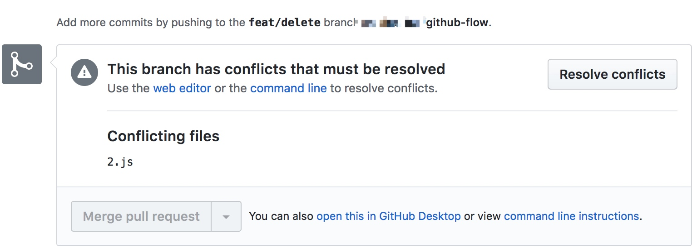
假设本地有冲突的分支为 feat/delete，已经合到 upstream/develop 分支为 feat/update
在 feat/delete 分支上进行解决冲突操作：
git pull upstream develop --rebase
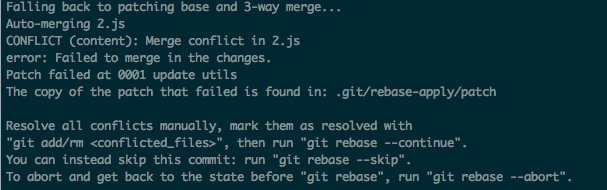
可以根据控制台输出的提示继续操作
先手动修改完代码，解决冲突保存之后执行：
git add .
git rebase --continue
git push origin feat/delete -f
最后 feat/delete 的改动出现在了 feat/update 的时间线后面，可以正常 pull request merge 了，下图是 merge 之后的 commit 路线图
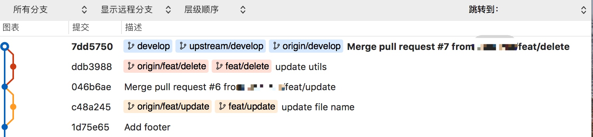
结对编程的情况
主动情况
甲从 develop 新起一个分支为 feat/jia， 甲、乙做的功能有通用的地方，此时甲、乙的代码都不能同时提交 pull request，因为功能缺乏，发到线上可能会挂掉。因此此时需要结对编程，甲开发完公共的部分，推到他的远端仓库，此时先不要提交 pull request。乙来拉取甲的代码继续进行开发，待乙开发完，提交 pull request 到 upstream 上游仓库，举例如下：
例如甲fork 到自己托管空间的远端仓库为：
git@github.com:jia/github-flow.git
此时甲将他的代码推送到 他的origin 远端 feat/jia 分支，然后甲告诉乙，你可以继续进行开发了，
此时乙本地准备开发的分支为 feat/yi，在该分支上进行如下操作：
git remote add pair git@github.com:jia/github-flow.git
git pull pair feat/jia --rebase
上面命令的意思是新建一个名字叫 pair 的远程仓库，地址为甲的仓库地址。 然后拉去该仓库下的 feat/jia 分支同步到当前分支。
乙在该分支上修改完代码提交后，提pr到甲仓库的 feat/jia 分支，若没有问题，使用Rebase and merge 合进去。code review 通过后，由甲再次提交 pr 到上游仓库 develop 分支，合并到上游 develop 分支。此时甲乙的 feat/jia、feat/yi 功能分支都可以删掉了。
被动情况
如果甲提交 pull request 之后，在 code Review 时发现问题，但是自己又不能马上修掉，可能需要他人帮忙，那么这个时候，乙出现来救火，首先乙先从 develop 拉出个 feature 分支，pull 甲的 feature 分支，例如：
git remote add pair https://github.com/lalala/flow.git
git pull pair feat/test3 --rebase
乙修改完代码后，将改动的之后的内容提 pull request 到甲有问题的当前 feature 分支。你需要rebase and Merge 合掉另一个的 pull request。再按照标准流程将最后的没有问题的 pull request 合到develop。
补充
开发中需要的注意事项以及建议：
- 规范化Commit Message：
为了保证每个commit 是必须有意义的的同时，开发人员的commit 格式要统一，便于阅读。
对于commit 的规范推荐使用 cz-cli， 其安装步骤如下：
npm install commitizen -g
在项目中 命令行运行：
commitizen init cz-conventional-changelog --save-dev --save-exact
每次 commit 执行 命令 git cz
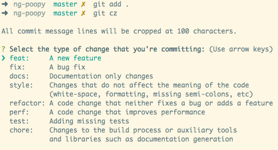
2. 对于上游仓库，要保护develop 和 master 分支，不允许团队成员随意（直接）推送代码到 develop 或 master 分支。
3. 设置 develop 分支为 default 分支，便于提交 pull request 时 base 分支自动默认为 develop分支
4. Github flow 开发流程中，可以配置 webhook 去自动触发测试环境的发布和自动化测试，只有自动化测试和code review 都通过，才可以被允许合并到 develop 分支。
5. 将某些关键字加入到 pull request 的描述文本中，例如输入close issue #4 ，当 pull request merge 通过并合并到 develop 后，该 issue 会被自动关闭。
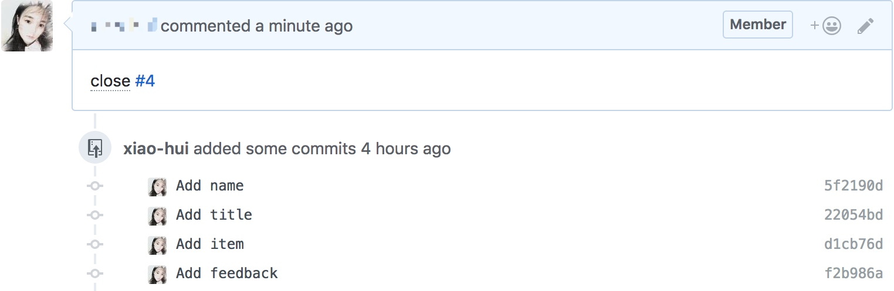
- 设置pull_request 模板 能规范化团队 pull request 的内容，示例模板如下： 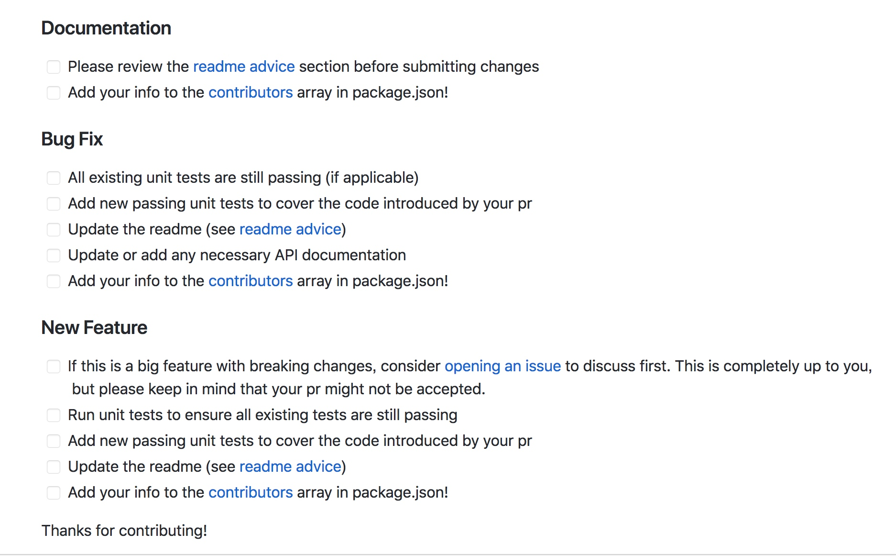
总结
上面简单介绍了笔者在工作中使用的 github flow 工作流。但是最早由于不熟悉整个 Git 流程，一度非常依赖 sourceTree，只敢在 sourceTree 上进行可视化操作，导致对于 git 的工作流程一直不是很理解。因此对于初学者如果一开始就使用SourceTree 的各种操作但是不知道是什么原理，会很麻烦。因此建议脱离 SourceTree 自己动手命令行多去练习 Git 的一整套工作流程。
文中的一些想法都是笔者工作学习过程中的思考和一点小小的总结。本文并没有很深入的介绍每个命令的具体参数，而是主要介绍了工作流程。如果对其中的命令有疑问的同学，可以利用搜索引擎去了解更多。如有错误，欢迎指正！
相关链接：
https://help.github.com/articles/about-merge-methods-on-github/
https://github.com/geeeeeeeeek/git-recipes